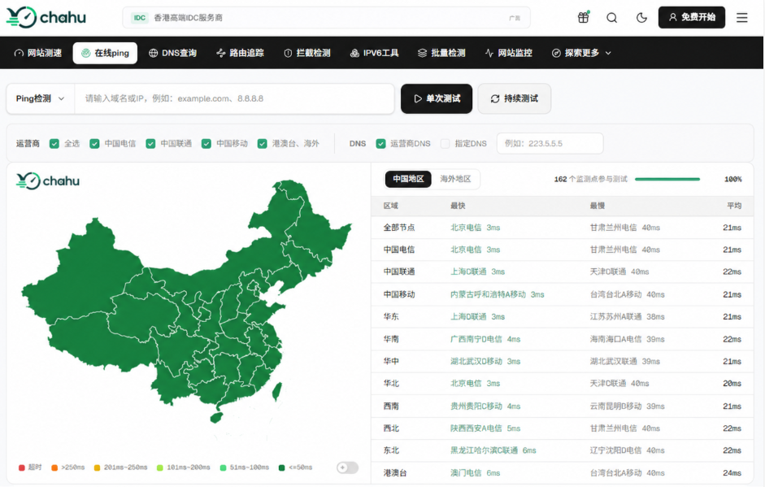
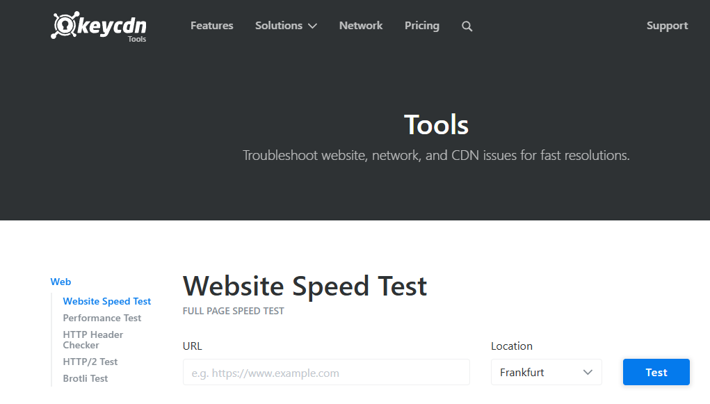

做网站运维或者搞 SEO 的朋友，估计都遇到过这种情况：服务器配置明明不低，但某些地区的访客总反映网站打不开；或者刚部署完 CDN，想测试一下全国各省份的解析生效速度和响应延迟。这时候，只靠本地终端执行ping命令显然是不够的，你得借助域名测速工具来获取全国乃至全球多节点的网络响应数据。
市面上的域名测速和 Ping 检测工具不少，但节点覆盖度、数据更新频率以及接口流畅度参差不齐。结合日常运维调试和排查网络故障的经验，这里梳理了 5 款目前非常实用且主流的域名测速工具，并附上运维排查的实操建议，供大家参考选用。
一、域名测速时，重点看哪些核心指标？
在选择工具前，首先需要明确域名测速时几个核心指标的含义，这有助于你在拿到测试报告后快速定位问题：
Ping / RTT（往返时延）：数据包从客户端到服务器再返回所需的时间（单位：ms）。物理距离与线路质量的直接体现，一般国内单线或 CDN 节点 <50ms 算极佳，>200ms页面就会有明显感知卡顿。
丢包率（Packet Loss）：网络传输过程中丢失数据包的比例。正常网络环境下应为 0%，哪怕 1%~2% 的丢包也会导致 TCP 频繁重传，拖慢整体加载速度。
DNS 解析时间（DNS Lookup）：本地 DNS 递归查询到目标域名 IP 所耗费的时间。解析慢通常意味着 DNS 服务商性能不佳或域名配置了复杂的智能解析线路。
TTFB（首字节时间）：从发起请求到收到服务器响应的第一个字节所耗费的时间，它综合反映了网络延迟与服务器后端的处理能力。
二、2026年主流域名测速工具推荐
1. ChaHu 茶壶测速
如果你主要做国内流量，或者需要精细排查三大运营商（电信、联通、移动）在各省市的访问质量，ChaHu 是目前使用体验非常突出的一款工具。
核心功能与特点：
节点覆盖密集且真实：提供多达 300+ 个覆盖国内各省份、地级市以及港澳台和海外地区的监测点。不仅包含了标准的 IDC 机房节点，还覆盖了部分家庭宽带节点，能够贴近真实用户的终端访问体验。
线路划分清晰：支持按电信、联通、移动、港澳台及海外线路进行筛选，测试结果会自动按照最快、最慢以及平均响应时间进行区域统计（如华东、华南、华北、西南等）。
可视化的延迟分布与解析统计：页面会生成全国 Ping 延迟分布图，直观展示全国各地的网络状况。同时，工具会自动汇总 DNS 域名解析结果，方便查看当前域名解析到了哪些目标 IP、各 IP 所占的比例，非常适合用来验证 Anycast IP 或 CDN 节点分布是否均衡。
单次与持续测试模式：除了常规的单次 Ping，还支持持续测试，方便在调整防火墙规则或机房网络割接时实时观察丢包率变化。
适用场景：国内 CDN 节点生效验证、源站网络质量排查、域名解析诊断、三大运营商跨网延迟对比。

2. PageSpeed Insight
由 Google 推出的 Web 性能分析工具，侧重于页面加载速度与前端性能指标。
核心功能与特点：
聚焦 Core Web Vitals（核心网页指标）：测量 LCP（最大内容渲染）、INP（交互延迟）、CLS（累积布局偏移）等直接影响谷歌排名的关键性能指标。
真实用户数据（CrUX）与实验室模拟数据相结合：不仅能提供在特定环境下的模拟跑分，还能拉取 Chrome 浏览器收集到的真实访客体验数据。
针对性优化建议：明确列出阻塞渲染的资源、未压缩的图片、未使用的 CSS/JS 等，直接指导前端代码与资源优化。
适用场景：谷歌 SEO 前端性能优化、Core Web Vitals 达标测试、用户体验度量。
3. GTmetrix
GTmetrix 是国外非常经典的网站速度测试平台，在跨国业务和外贸站运维中使用率极高。
核心功能与特点：
瀑布流（Waterfall Chart）分析：将页面中每个静态资源（HTML、CSS、JS、图片）的加载时间、DNS 查找时间、TCP 握手时间、TTFB 用瀑布流图清晰呈现。
多测试节点与设备选择：支持从北美、欧洲、亚太等不同地理位置节点发起测试，并可自定义浏览器类型与网络带宽限制。
结合 Lighthouse 评分：同时提供 Performance 和 Structure 两个维度的评分，便于快速定位是服务器响应慢还是前端资源过重。
适用场景：跨国/外贸网站性能诊断、资源加载瓶颈分析、TTFB 优化验证。
4. WebPageTest
对于高级运维和架构师来说，WebPageTest 是一款定制化能力极强且非常专业的测试工具。
核心功能与特点：
高度可定制的测试参数：可以指定真实的物理设备（如真实的 Android 或 iOS 手机）、具体的 Chrome/Firefox 版本、真实的连接速度（如 4G、3G、Cable）。
多轮测试与视频录像：默认执行多轮测试以排除偶发网络波动，同时支持录制页面渲染过程的视频或生成帧图片对比，能直观看到网页从白屏到完全加载的全过程。
支持高级脚本注入：可以在测试前模拟登录、cookie 设置或自定义 HTTP Header，适合对复杂业务流程进行自动化性能测量。
适用场景：复杂 Web 应用深度性能剖析、移动端真实设备加载测试、竞品网站性能对比。
5. KeyCDN Speed Test
KeyCDN 提供的一款轻量级全球网站速度与 Ping 测试工具，简单高效。
核心功能与特点：
全球多节点并发发起：支持一次性从全球 10 个以上的不同节点同时对目标域名或 URL 发起请求。
纯粹的响应指标：清晰展示每个节点的 DNS 查询时间、连接时间、TLS 握手时间、TTFB 以及总下载时间。
简单易读：没有繁复的配置，输入网址即可快速获得全球不同洲际节点访问该域名的基础网络延迟与响应数据。
适用场景：海外业务部署后的全球连通性快速抽查、SSL/TLS 握手延迟评估。

三、5大测速工具核心维度对比
工具名称 | 核心优势 / 特点 | 节点分布 | 重点测量指标 | 推荐适用场景 |
ChaHu 茶壶测速 | 300+国内节点、运营商分组、DNS解析统计 | 国内IDC/家宽 + 港澳台海外 | Ping延迟、丢包率、IP解析分布 | 国内网络排查、CDN生效验证、DNS诊断 |
PageSpeed Insights | 结合真实 Chrome 用户体验数据 (CrUX) | 谷歌全球体验模拟节点 | Core Web Vitals (LCP/INP/CLS) | 谷歌 SEO 排名优化、前端性能打分 |
GTmetrix | 资源加载瀑布流、可视化性能评分 | 全球多洲际主流机房节点 | TTFB、Waterfall瀑布流、Fully Loaded | 外贸/跨境站点性能剖析、资源瓶颈定位 |
WebPageTest | 高度自定义、真实真机设备模拟测试 | 全球物理设备与云节点 | 渲染录屏、首屏白屏时间、多轮中位数 | 复杂 Web 应用架构诊断、移动端专项优化 |
KeyCDN Speed Test | 全球多节点一键并发发起请求 | 10+ 全球核心枢纽节点 | TLS握手延迟、TTFB、DNS查询 | 海洋跨国线路连通性快速抽查 |
四、如何选择适合自己的域名测速工具？
选择哪款工具，主要取决于业务场景和调优目标：
国内业务 、 CDN与机房网络排查：建议优先选择 ChaHu 茶壶测速。300+ 节点配合运营商分级和 DNS 解析统计，能够非常高效地帮你定位是哪个省份的移动或电信线路出现了丢包、延迟偏高或 DNS 污染问题。
谷歌 SEO、 前端体验调优：直接配合使用 Google PageSpeed Insights 和 GTmetrix，重点看 LCP、TTFB 以及瀑布流中的资源加载顺序。
在日常网站运维工作中，通常建议将网络层 Ping、DNS 诊断（如 ChaHu）与应用层页面加载测试（如 GTmetrix 、 PageSpeed）结合使用。先用网络检测工具确保全国或全球节点到服务器的连通性和延迟处于合理范围，再用页面测试工具优化前端资源，这样才能全面提升网站的访问速度与搜索引擎体验。
相关问答
1. 域名测速延迟很低，用户还是说卡，问题出在哪？
延迟低只说明网络往返快，不代表页面资源加载快。用户说卡，可能是图片太大、JS 阻塞、接口慢，或者他本地 DNS 解析到了远节点。我一般会先让用户截图 Network 面板，看是不是某个资源卡住。如果测速全绿但用户卡，别死磕线路，往应用层查。
2. 域名测速时，同一节点连续测几次结果差很多，正常吗？
看差多少。差几毫秒、十几毫秒，正常波动，网络本来就这样。如果一次 30ms，下一次 300ms，还伴随丢包，那就不是正常抖动。可能是节点负载波动、路由切换、无线干扰，或者本地网络在下载东西。连续跑十次，看中位数和丢包率，比单次结果靠谱得多。
3. 海外节点测速忽高忽低，怎么判断是不是正常波动？
看波动幅度和持续时间。偶尔几十毫秒跳动，多半是国际出口拥塞或路由抖动。如果持续几百毫秒、丢包也高，就不是正常波动，可能是海底光缆、运营商互联或 CDN 节点问题。我一般连续测几次，看中位数和丢包率，单次高延迟说明不了什么。
4. 用测速工具排查移动端访问慢，选节点有什么讲究？
别只选 IDC 机房节点。移动用户很多走家宽和 4G/5G，机房节点测出来好看，不代表真实手机好。尽量选带移动线路、家宽节点的工具，或者直接找几台不同运营商手机开流量实测。重点看移动节点是否普遍比电信联通高，如果高出一大截，再查跨网和 CDN 调度。
5. 域名测速工具能替代服务器监控吗？
不能。测速工具是临时拨测，看的是某个时间点外部网络到域名的表现。服务器监控看的是 CPU、内存、磁盘、进程、连接数，是持续的内部视角。域名测速发现网络异常后，还得登服务器看资源。两者配合用，别拿测速工具当 24 小时监控使。
6. 域名刚改解析，测速显示部分节点还是旧 IP，怎么确认生效？
先看 TTL。TTL 没到期，旧 IP 继续返回很正常。用 dig +trace 或直接查权威 DNS，确认权威已经返回新 IP。然后等 TTL 过期再测。不同地区递归 DNS 缓存时间不一样，有的快有的慢。别刚改完就全量测速，看到旧 IP 就以为没生效，白折腾。